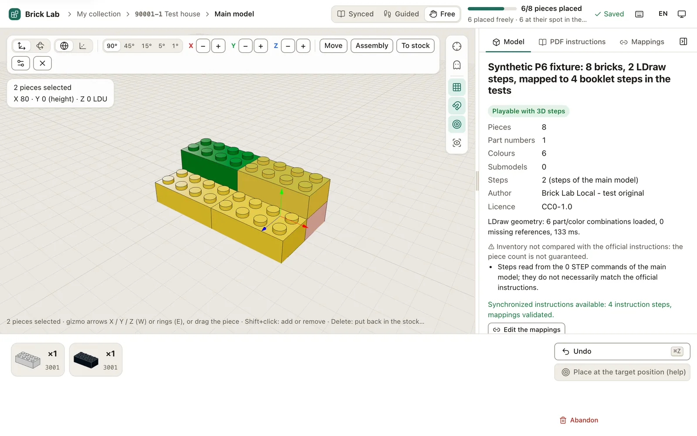

Rebuild brick sets in 3D,
step by step, from LDraw files
Brick Lab Local is a free, open-source LDraw viewer and virtual brick builder. Open a .mpd or .ldr model, follow its building steps or build freely, with your own PDF instructions side by side. Everything runs on your computer.

Features
Guided building from LDraw steps
When a model contains 0 STEP commands, each step's target positions are shown and every part snaps into place. Rotate the part in hand around X, Y and Z.
Free building with snapping
Build in any order, place parts where you point, rotate to the degree, move connected assemblies with a 3D manipulator. Studs, anti-studs, pins and pin holes snap together.
Your PDF instructions alongside
Read the building instructions you downloaded yourself in a resizable PDF panel, and map instruction pages to 3D steps with a built-in editor.
Compatibility check before import
Steps, submodels, parts missing from your LDraw library, license and author: you see what is playable, and why, before you start.
Personal collection
Keep your sets and builds with progress and thumbnails, resume after a restart, undo, back up and restore.
Local-first and private
The server listens on 127.0.0.1. No account, no analytics, no cloud. Network access only when you click, and it can be disabled entirely.
How it works
- Install the free LDraw parts library once, on your computer.
- Add a set: type its number, pick a local
.mpd/.ldrfile or, on demand, a model from the LDraw Official Model Repository (OMR). - Optionally drop in the PDF instructions you downloaded from the official website.
- Build it in 3D, in guided or free mode, and pick it up again whenever you like.
Installation
Requirements: macOS, or Windows 10/11 (preview); Node.js 20.9 or later; Git; the LDraw parts library (complete.zip, CC BY 4.0).
git clone https://github.com/Pierson38/brick-lab-ldraw.git
cd brick-lab-ldraw
npm ci
npm run devThen open http://127.0.0.1:3000. The full installation guide explains where to unzip the parts library and how to configure .env.local.
FAQ
What is LDraw?
LDraw is an open standard and a community-maintained library of brick parts used to describe brick models in plain-text files (.ldr, .mpd). Brick Lab Local reads these files and renders them in 3D with Three.js.
Does it work offline?
Yes. Once the parts library is installed, everything works without Internet access. Online search in the OMR is optional and can be disabled with BRICK_LAB_ONLINE=0.
Does it download building instructions for me?
No. Instructions are protected by copyright: you download them yourself from the official website, for your personal use. The app only displays the files you import.
Can every set be rebuilt?
It depends on the LDraw file: steps, submodels and parts available in your library. The app tells you before import whether a model is playable with steps, only in free building, or incomplete.
Is it free?
Yes. The code is open source under the MIT license. There is no account, subscription or tracking.
Unofficial project. LEGO® is a trademark of the LEGO Group, which does not sponsor, authorize or endorse this project. The repository contains no instructions, no third-party set models and no parts library: everything is imported locally by the user.